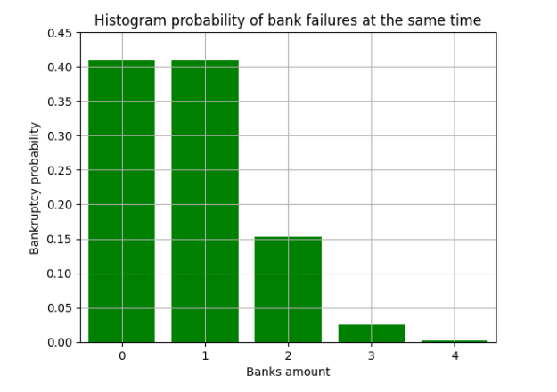

Описание: GNU Octave — свободная программная система для математических вычислений, использующая совместимый с MATLAB язык высокого уровня.
В городе 4 коммерческих банка. У каждого риск банкротства в течение года составляет 20%. Построить модель банкротства банков. Оценить вероятности того, что в течение года обанкротятся один, два, три, четыре банка.
В городе 4 коммерческих банка. У каждого риск банкротства в течение года составляет 20%. Построить модель банкротства банков. Оценить вероятности того, что в течение года обанкротятся один, два, три, четыре банка.
import matplotlib.pyplot as plt
import math
p = 0.2
q = (1-p)
n = 4
k = (0,1,2,3,4)
independent_tests = []
def сombination(k, n):
n_fac = math.factorial(n)
k_fac = math.factorial(k)
n_minus_k_fac = math.factorial(n-k)
result = (n_fac/(k_fac*n_minus_k_fac))
return result
for i in range(0,len(k)):
res = сombination(k[i], n) * pow(p,k[i]) * pow(q,(n-k[i]))
independent_tests.append(res)
x = k
y = independent_tests
plt.bar(x,y,align='center',color ='green')
plt.xlabel('Banks amount')
plt.ylabel('Bankruptcy probability')
plt.title('Histogram probability of bank failures at the same time')
plt.xlim(-0.5, 4.5)
plt.ylim(0, 0.45)
plt.grid(True)
